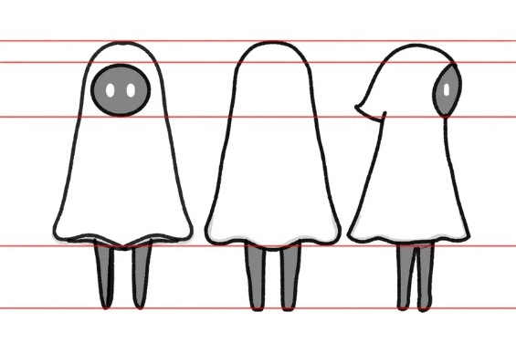

Slow
Descripción
Los Fantasmas Malignos son manifestaciones de energía mágica corrompida que habitan en antiguas ruinas, vinculadas a los tesoros abandonados, especialmente los diamantes. Para defenderse, pueden lanzar diamantes como proyectiles espectrales contra los intrusos, usándolos tanto como arma como medio para sembrar el caos.
Model Sheet
Diseño base del personaje usado como guía de modelado y animación.
Concept Art
Visualización del estilo artístico inicial y expresividad del personaje.
Explora el modelo en 3D
Usa el mouse para rotarlo y hacer zoom.